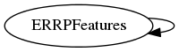

Master index
Index for ./+eegtoolkit/+featextraction/@ERRPFeatures
Dependency Graph for ./+eegtoolkit/+featextraction/@ERRPFeatures

Generated on Fri 25-Nov-2016 14:50:32 by
m2html
© 2005
 Master index
Master index Master index
Master index